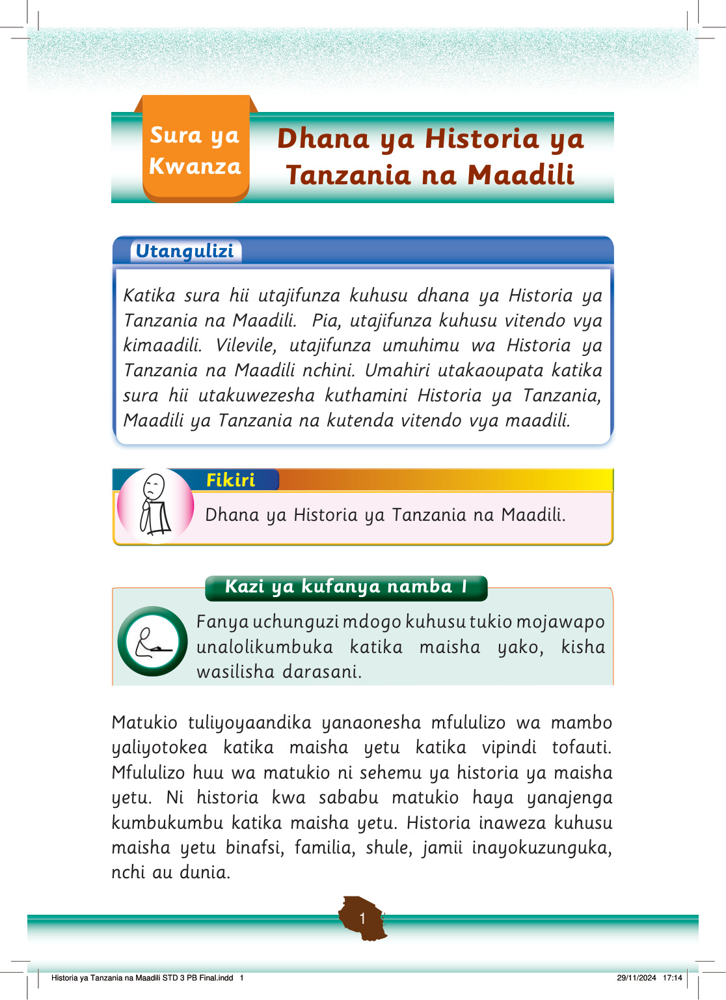

Kazi ya kufanya namba 2
Kazi ya kufanya namba 2: Andika matukio yaliyotokea na kuacha kumbukumbu katika shule yako.
Andika matukio yaliyotokea na kuacha kumbukumbu katika shule yako.
Matukio tuliyoorodhesha ni sehemu ya historia katika shule yetu.
Matukio haya ni sehemu ya historia ya shule yetu kwa kuwa yameacha alama ya kumbukumbu katika shule.
Dhana ya Historia ya Tanzania na Maadili imeundwa na dhana ya historia ya Tanzania na dhana ya maadili.
Dhana ya historia ya Tanzania imebeba maana, matukio ya kihistoria Tanzania na umuhimu wa historia ya Tanzania.
Dhana ya pili inahusu maadili, ambayo imebeba maana, vitendo vya maadili na umuhimu wa maadili nchini.
Tunapojifunza dhana hizi kwa pamoja, tunapata nafasi ya kubaini maadili yetu na misingi ya ujenzi wa maadili katika historia ya jamii za Kitanzania.
Hivyo, kuiwezesha jamii ya sasa kukuza na kulinda maadili ya Watanzania kwa sasa.
Maana ya historia ya Tanzania
Inawezekana umewahi kusikia kuhusu Historia ya Tanzania au maeneo yenye historia ya Tanzania.
Historia ya Tanzania ni nini?
Kazi ya kufanya namba 3: Soma matini kutoka katika vyanzo mbalimbali, ikiwemo mtandao, kuhusu maana ya historia ya Tanzania.
Kazi ya kufanya namba 3
Soma matini kutoka katika vyanzo mbalimbali, ikiwemo mtandao, kuhusu maana ya historia ya Tanzania.
Historia ya Tanzania ni elimu kuhusu matukio yaliyotokea nchini Tanzania tangu mwanzo wa maisha ya watu mpaka